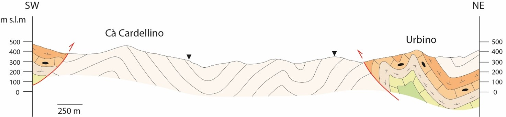
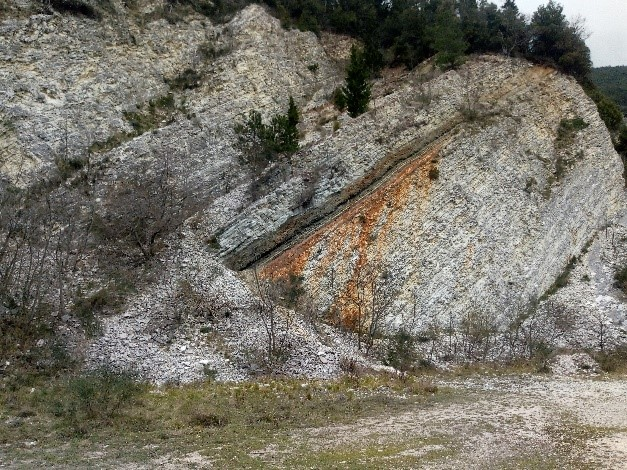
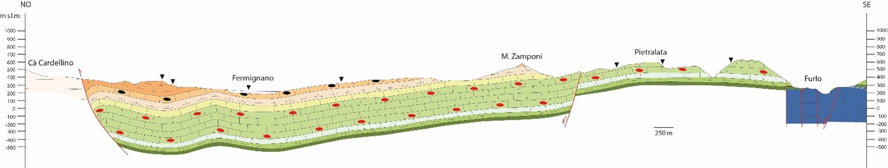
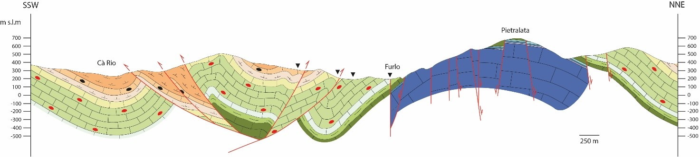
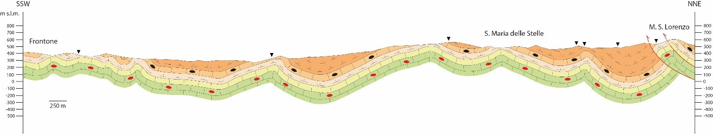
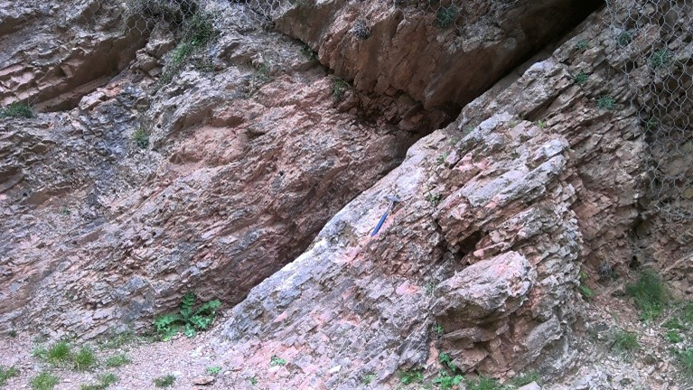
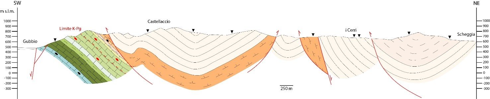

La geologia del Cammino del Duca
Dai mari tropicali fino alle montagne della terra del Duca! Questa è la trasformazione che ha subito il territorio durante la sua storia geologica. Una di più di 200 milioni di anni che va dal Triassico Superiore (circa 220 milioni di anni fa) fino al tardo Miocene (circa 5 milioni di anni fa).
L’area compresa tra Urbino e Gubbio ricade all’interno dell’appennino umbro-marchigiano, catena appenninica caratterizzata dall’omonima successione sedimentaria umbro-marchigiana, una delle più complete al mondo.
La struttura dell’area umbro-marchigiana può essere così sintetizzata:
Il Basamento cristallino è una porzione di crosta terrestre formata da rocce magmatiche e metamorfiche pre-Triassiche (più di 220 milioni di anni fa) e rappresentano la superficie di appoggio della sovrastante copertura sedimentaria.
Successivamente, durate il periodo Triassico, l’area umbro-marchigiana fu coinvolta in un processo tettonico di distensione che portò alla formazione di un nuovo oceano, noto in letteratura come oceano della Nuova Tetide. Questa fase ha condotto alla distensione dell’area e all’inizio di un processo di ‘annegamento’ (noto come subsidenza) delle terre continentali, con conseguente invasione periodica da parte delle acque marine in quest’ultime. Questo processo ha portato alla deposizione di minerali evaporitici che oggi costituiscono la formazione delle Anidriti di Burano. Passando da un ambiente di transizione ad uno marino con acque basse, cominciò la formazione del Calcare Massiccio. L’ambiente deposizionale è riferibile a quello di piattaforma carbonatica delle Bahamas.
Da qui in poi si passa alla sedimentazione in ambiente marino profondo (pelagico) fino alla fine del Miocene. Questa fase temporalmente molto estesa può così essere organizzata:
L’intera successione si chiude con i depositi Plio-Pleistocenici e Quaternari di ambiente continentale quali depositi fluviali, di versante e di frana.
Geologia delle tratte del Cammino
Il percorso del Cammino del Duca ha un andamento all’incirca Nord-Sud. Per meglio illustrare la geologia di questo settore, si rende necessario che le sezioni geologiche, che mostrano la geologia sotto la superficie, siano orientate trasversalmente agli assi delle strutture principali, quindi con direzione Sud Ovest – Nord Est. A tale scopo, quindi, sono state prodotte alcune sezioni geologiche per settori che corrispondono grosso modo alle tratte proposte. Le tracce sono riportate sulla mappa disponibile sul web-GIS e, cliccando sopra ogni segmento, è possibile visualizzare la sezione geologica collegata. In ogni sezione, inoltre, sono riportati dei triangolini/segnaposto neri che indicano dove il percorso interseca le tracce di sezione stesse.
Tratta Urbino - Fermignano
Nella prima tratta del Cammino è caratterizzata esclusivamente dalla presenza delle formazioni mioceniche. Partendo dal Palazzo Ducale, lungo il percorso è possibile ammirare piccoli affioramenti di Bisciaro e di Schlier che descrivono delle pieghe ad asse NW-SE. La maggior parte della prima tratta poggia però sui terreni torbiditici della Marnoso Arenacea (Membro di Urbino), delimitata sia a NE che a SW da due sovrascorrimenti che chiudono una lunga fascia di torbiditi (fig. 1).
Figura 1 - Sezione Urbino - Cà Cardellino
Tratta Fermignano – Furlo
Lungo la seconda tratta è presente una più grande varietà di formazioni geologiche, di età sempre più antica man mano che si avanza verso la Gola del Furlo. L’assetto strutturale in questa parte di percorso è di tipo monoclinalico, cioè gli strati delle varie formazioni presentano tutti la medesima direzione di immersione. Ciò è abbastanza evidente nella sezione sottostante (fig.2).
Figura 2 – Affioramento del Livello Bonarelli
Avvicinandosi alla meta della seconda tratta si incontrano affioramenti di particolare interesse. Una volta raggiunta la Str. Monte Furlo, effettuando una breve deviazione, si raggiunge un importante affioramento del Livello Bonarelli (fig. 2): si tratta di un livello stratigrafico diffuso in tutta l’area umbro-marchigiana e serve come guida per le correlazioni stratigrafiche. È composto prevalentemente da scisti bituminosi che testimoniano un periodo di anossicità (riduzione di ossigeno disciolto nelle acque) del bacino umbro-marchigiano a metà del periodo Cretaceo.
Di grande interesse è il tratto finale vicino al paese Furlo, in quanto giunge al nucleo dell’anticlinale del massiccio (fig. 5). La parte interna della piega è costituita da Calcare Massiccio a cui è sovrapposta la successione condensata giurassica: si evince che la zona del Furlo era un rilievo sottomarino. La successione condensata è ben visibile all’interno della cava dismessa che si incontra lungo il cammino (fig. 4).
Figura 3 - Sezione Fermignano - Furlo.
È ben evidente l’assetto monoclinalico di questa porzione di territorio.
Figura 4 - Cava dismessa del Furlo.
La quasi totalità del fronte di cava si compone di Calcare Massiccio.
Superiormente si riconoscono le formazioni dei Calcari Rosa a Crinoidi e Corniola,
Rosso Ammonitico (livello rosso) e del Bugarone, tipica formazione di successione condensata.
Tratta Furlo – Santa Maria delle Stelle
Nella terza tratta abbandoniamo l’anticlinale del Furlo per entrare in un’area che è stata soggetta ad un’intensa deformazione. Tale assetto è legato alla tettonica compressiva Plio-Pleistocenica dell’orogenesi appenninica. Di fatto si incontrano numerosi sovrascorrimenti (thrusts) sia con vergenza verso NE (cioè con senso di trasporto verso NE), che con vergenza verso SW. Quest’ultimi sono chiamati backthrusts. Nel loro insieme, thrusts e backthrusts delimitano una regione in sollevamento nota come struttura pop up. Il Cammino percorre questa struttura lungo la sua zona centrale passando per Monte Varco.
Figura 5 – Sezione del Furlo.
Risulta evidente la piega anticlinalica del Furlo con il suo nucleo di Calcare Massiccio.
Al di sopra di quest’ultima formazione è visibile la successione condensata giurassica di
alto strutturale. Le faglie dirette che tagliano il Calcare Massiccio sono faglie giurassiche.
Tratta Santa Maria delle Stelle – Frontone
La quarta tratta procede in direzione Frontone mantenendosi prevalentemente all’interno dei terreni Miocenici. Come risulta evidente in figura 6 l’assetto strutturale si compone di un’alternanza di pieghe anticlinali e sinclinali, mentre sembrano essere assenti faglie di ogni tipo.
Figura 6 – Sezione M.Varco – Frontone.
L’assetto strutturale risulta molto semplice e caratterizzato da un’alternanza di
pieghe sinclinali ed anticlinali.
Tratta Frontone – Fonte Avellana
Tratta Fonte Avellana – Scheggia
Tratta Scheggia – Gubbio
L’ultima tappa del Cammino si svolge prevalentemente sui terreni Miocenici: si parla di Schlier, Marnoso Arenacea e Arenarie di Monte Vicino. Queste formazioni contengono rocce terrigene, ossia legate a erosione, trasporto e sedimentazione di sedimenti provenienti da una zona già emersa e depositate in un bacino marino che viene definito “di avanfossa” perché individuato di fronte ad una catena, quella Appenninica, in formazione. Qui si depositano appunto strati composti di arenarie e fanghi litificati (marne) che derivano dall’erosione delle catene emerse quale quella Alpina e in minore misura quella Appenninica. Raggiungendo la Gola del Bottaccione si ritorna all’interno delle formazioni più antiche, partendo sempre dallo Schlier fino ad arrivare alla formazione dei Calcari Diasprini. L’assetto strutturale della tratta consiste prevalentemente di thrust, legati all’orogenesi appenninica, e alcune faglie dirette, in particolare nell’area vicino a Gubbio, legate alla recente tettonica distensiva del nostro Appennino.
Figura 7 – Affioramento del limite K-Pg, Gola del Bottaccione.
All’interno della Gola del Bottaccione affiora molto bene buona parte della successione umbro-marchigiana, compreso il limite K-Pg (Cretaceo-Paleogene) all’interno della Scaglia Rossa (fig. 7). Esso è un sottile livello di argille tra strati di calcarei ricco di iridio interpretato come di origine extraterrestre, che viene datato circa a 66 milioni di anni fa. Gli studi dei fossili indica una catastrofe planetarie legata ad un impatto di asteroide nello Yucatan, a cui corrisponde anche l’ultima estinzione di massa che determinò la fine del periodo dei grandi rettili, i dinosauri. Nonostante affiori in molte parti del mondo, il limite K-Pg è stato individuato per la prima volta nella Gola del Bottaccione dal geologo Luis Alvarez e il team di scienziati (tra cui il padre premio Nobel per la Fisica).
Figura 8 – Sezione Scheggia – Gubbio.
La linea tratteggiata rossa all’interno della formazione della Scaglia Rossa rappresenta il limite K-Pg.